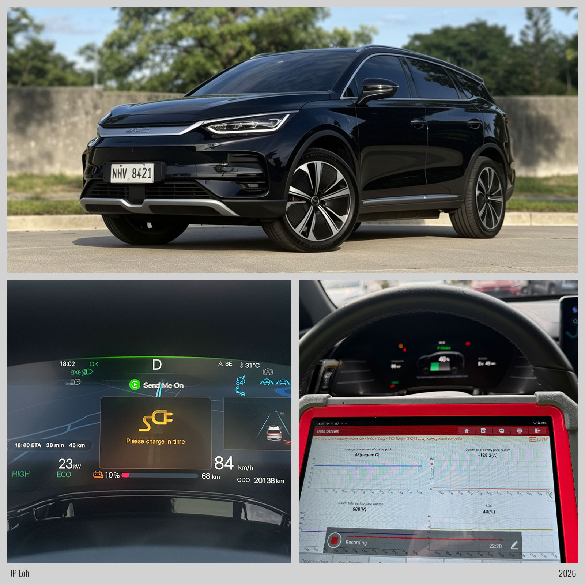

JP Loh / Philippine EV Community
Shell Recharge SLEX Mamplasan NB·11 Jun 2026, 15:56–17:13·180 kW charger·170 kW claimed max
The Tang hits its number. Peak power reached 170.5 kW against a 170 kW claim, landing within half a percent of the figure on the brochure. From the 20 to 80% window the Tang takes 48.4 minutes.
Unlike the Jaecoo EJ6, the test shows a curve unlike of a clean current-limit table. Pack temperature climbed from 34 to 49° C across the session, and the power steps track that rise rather than tracking SOC alone.
The peak C-rate of 1.57C is higher than the EJ6's at 1.18C but the average C-rate from 20 to 80% would be the more significant figure in a typical real-world scenario.
The charger was shared during this session with a BYD Seagull, followed by a Kia EV6. The Tang still reached its full claimed power before the Seagull started charging but appears to have only affected the test 4 minutes into the session until the temperature reached 48° C and the current derate was applied. The EV6 did not affect the test as the data remained consistent when the EV6 started.
The average charging rate from 20 to 80% is 88.4 kW, achieving a 12.5 kW advantage over the EJ6. Despite this, the Tang would finish behind on a race to recharge from 20 to 80% due to the size of the battery pack.
Overall, it is good for the Tang to reach its claimed maximum charging speed and the charging time is reasonable for a pack this large. The charging rate is likely driven by temperature which is better than a

Each measure on its own axis, sharing one timeline.
Drag across the chart to zoom into a time range · double-click to reset · hover for values
The comparable view: power drawn at each SOC, independent of how long the session ran.
Hover for values at any state of charge